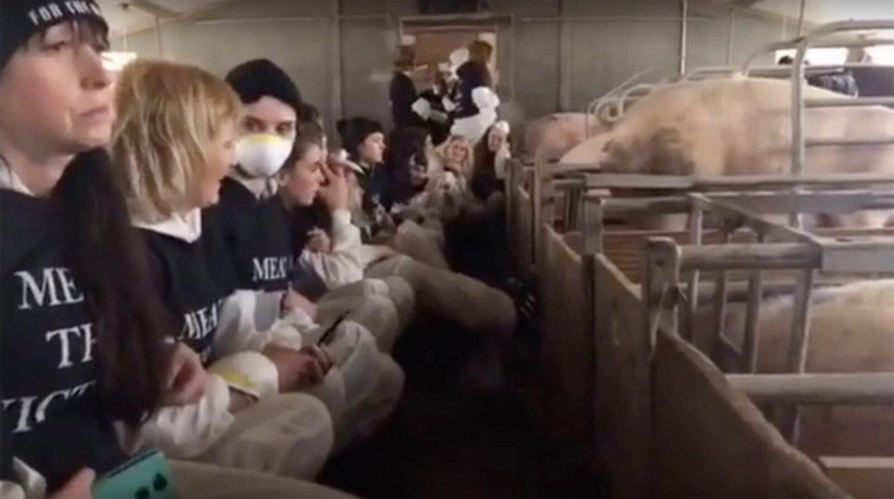

农场主可以告这些人非法入侵和损害财产罪吗？
@BIE别的:
#VICE简报# 【动保人士冲进农场抱猪却意外致猪死亡】
农场主 Sylvia Hook 称，一群素食主义者冲进他位于英国林肯郡的农场，希望向公众展示那些因他们选择吃肉而牺牲的动物。这群人聚集在母猪的分娩房，企图抱猪，但猪不愿意，一片混乱中，两只小猪意外死亡。
接受 BBC 采访时，Hook 称他看到一群足足有200人的素食大队浩浩汤汤地朝农场杀来，顿觉 “十分惊恐”。当时这群人正参加一个名为 “见见肉食受害者” ( Meat the Victims）的活动，希望通过造访各地农场，让公众了解动物所遭受的痛苦。进入农场后，素食大队的大多数人，一下涌入了被分隔成很多母猪栏位的分娩房。母猪栏空间十分狭小，饱受动保组织的诟病，大约有100人在分娩房静坐了8个小时，只为亲身体验母猪的幽闭恐惧。
接着，素食人士企图抱猪，但猪又不想被抱，这使得场面一度非常混乱，据 Hook 描述：“当时50个人全挤在一个分娩房里，猪被吓得上蹿下跳，一片尖叫声中，两只小猪被踩踏致死，还有两只当时就残了，后来才能站起来。”
曾参加活动的素食主义者坚决否认了造成小猪死亡的说法，并称当他们到农场的时候，小猪就已经病了。在活动的 录像 中，一名成员在进入农场前承认他们的行为会使动物产生压力，但他强调：“这点惊吓与这些动物在这个星球上每天所面对和遭受的痛苦相比，简直不值一提。”
农场主曾指控当时参加活动的素食人士 “不爱动物、不懂动物”，一名素食者随之回应到：“你不能说你爱动物，然后又杀死它们。”
图1 动保人员在分娩房面对母猪静坐，体会动物的痛苦，农场主事后称：“我连给猪喂食都进不去！” 图片来源：Youtube@Chris Hines
#动保人士冲进农场抱猪却意外致猪死亡#
农场主 Sylvia Hook 称，一群素食主义者冲进他位于英国林肯郡的农场，希望向公众展示那些因他们选择吃肉而牺牲的动物。这群人聚集在母猪的分娩房，企图抱猪，但猪不愿意，一片混乱中，两只小猪意外死亡。
接受 BBC 采访时，Hook 称他看到一群足足有200人的素食大队浩浩汤汤地朝农场杀来，顿觉 “十分惊恐”。当时这群人正参加一个名为 “见见肉食受害者” ( Meat the Victims）的活动，希望通过造访各地农场，让公众了解动物所遭受的痛苦。进入农场后，素食大队的大多数人，一下涌入了被分隔成很多母猪栏位的分娩房。母猪栏空间十分狭小，饱受动保组织的诟病，大约有100人在分娩房静坐了8个小时，只为亲身体验母猪的幽闭恐惧。
接着，素食人士企图抱猪，但猪又不想被抱，这使得场面一度非常混乱，据 Hook 描述：“当时50个人全挤在一个分娩房里，猪被吓得上蹿下跳，一片尖叫声中，两只小猪被踩踏致死，还有两只当时就残了，后来才能站起来。”
曾参加活动的素食主义者坚决否认了造成小猪死亡的说法，并称当他们到农场的时候，小猪就已经病了。在活动的 录像 中，一名成员在进入农场前承认他们的行为会使动物产生压力，但他强调：“这点惊吓与这些动物在这个星球上每天所面对和遭受的痛苦相比，简直不值一提。”
农场主曾指控当时参加活动的素食人士 “不爱动物、不懂动物”，一名素食者随之回应到：“你不能说你爱动物，然后又杀死它们。”
图1 动保人员在分娩房面对母猪静坐，体会动物的痛苦，农场主事后称：“我连给猪喂食都进不去！” 图片来源：Youtube@Chris Hines
#动保人士冲进农场抱猪却意外致猪死亡#
- 